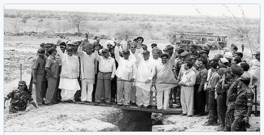
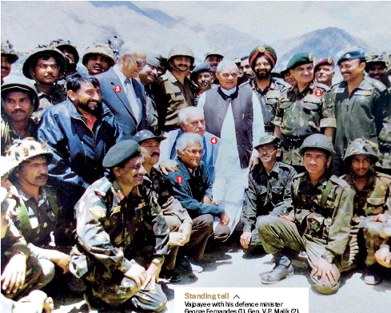
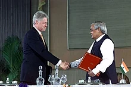

Pokhran nuclear tests

The Pokhran nuclear tests 25 years ago laid the foundations
for putting India at the heart of the world order today.
The bold, defiant tests consolidated the ginger
opening to the West initiated after the Cold War,
dismantled nuclear apartheid and compelled global powers to engage India as an equal.
After Kargil War

The Kargil Air War was fought between India and
Pakistan during the Kargil War from May to July
1999 in the Kargil district of Jammu and Kashmir
and elsewhere along the line of control. In India,
the conflict is also referred to as Operation Vijay,
which was the codename of the Indian military.
meeting U.S. president

Former US President Bill Clinton (left) and his daughter Chelsea Cilton
during his presidential visit to India in March, 2000. Former US President Bill Clinton
visits Nayala village near Jaipur in Rajashthan during
his presidential visit to India in March 2000.